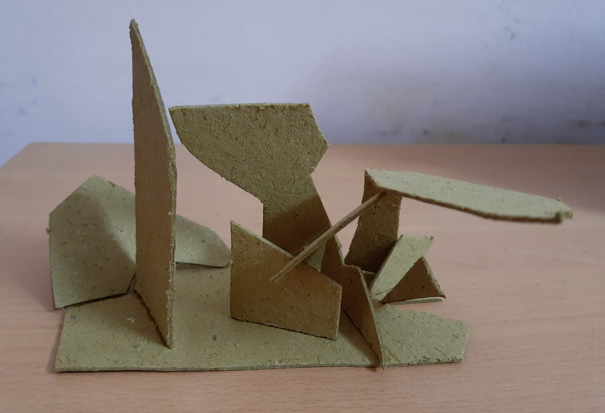

For this assignment, we had to experiment and create miniature relief and in-the-round sculptures that are abstract and had a few prominent elements of art and principles of design. Relief sculptures are sculptures that are projected in varying degrees from a two-dimensional background. A sculpture in the round is three-dimensional and can be seen from all angles. Elements of art and principles of design are fundamental ideas of visual design. All the sculptures that I created were made spontaneously without a sketch or plan.
Monument Sculpture
This is a sculpture in the round. I cut out cardboard into random shapes and arranged all the shapes on a cardboard base at different angles. That combination of the different angles and different shapes created a sculpture which looked interesting and different from all angles.

Medium: Cardboard
Art type: Sculpture
Tissue Paper Sculpture
This is a relief sculpture and to me it is fairly dull and unapealing to the eye. I cut out tissue paper into fairly equally shaped squares and then added spots to them with blue, light blue and purple markers. I planned to create something interesting and unique with all the piece however without a plan, my imagination was lacking and therefore I just created the first thing I thought of spontaneously.
Medium: Tissue Paper
Art type: Sculpture
Optical Ilussion Sculpture
This is a sculpture in the round and by far my favourite sculpture from all my experiments. I thought that it would be interesting to create a hollow octagon and then add lines to different to it at different angles and ended up making this. it looks much more impressive in real life where it looks different from every angle and is fascinating to look at.
Medium: Paper
Art type: Sculpture
Relief Sculpture
This is a relief sculpture as well. I like it but I also feel like I was subconsciously very heavily inspired by an example that was given for relief sculptures and therefore it is not the most unique. It was made by cutting out different shapes and attaching them together with double-sided tape (to create enough space between the ones on top and on bottom).
Medium: Paper
Art type: Sculpture
Reflection
Something that I did went well was the optical illusion sculpture which was quite creative and also very fascinating. Something that I can improve on next time is taking more risks. My tissue paper artwork turned out very dull because I was too afraid to mix all three of the colors together because if it turned out bad then it would've been a hassle to separate the colors. This mindset however prevented me from exploring new ways to use the cutout tissues which resulted in a rather unimpressive pieces. I faced failure with my tissue paper sculpture. After finishing it, I realised that it had failed I then decided to be more of a risk taker in my next sculpture which helped me a lot.
.png)